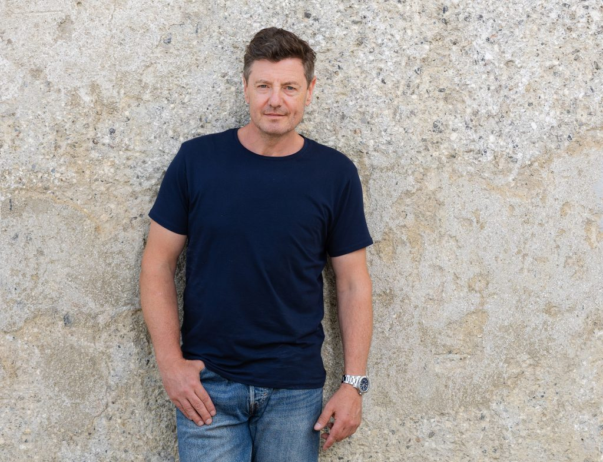
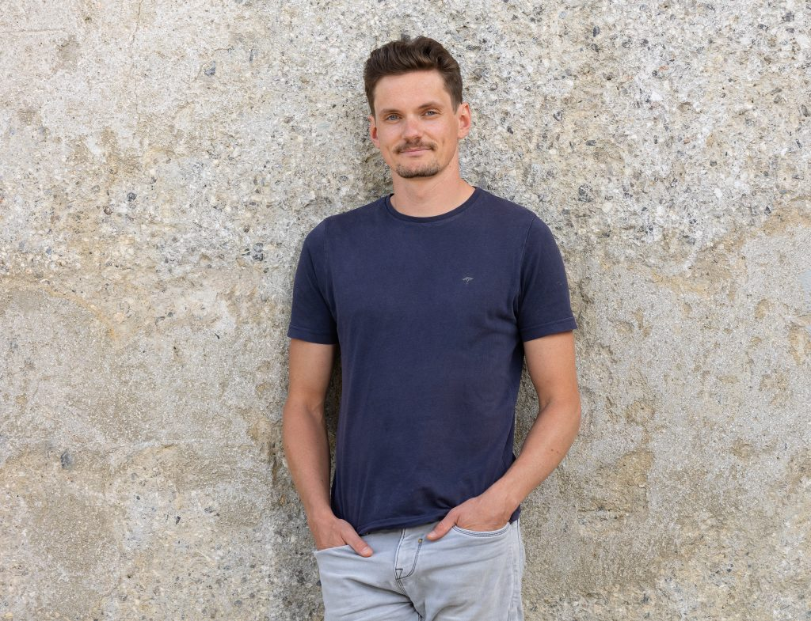
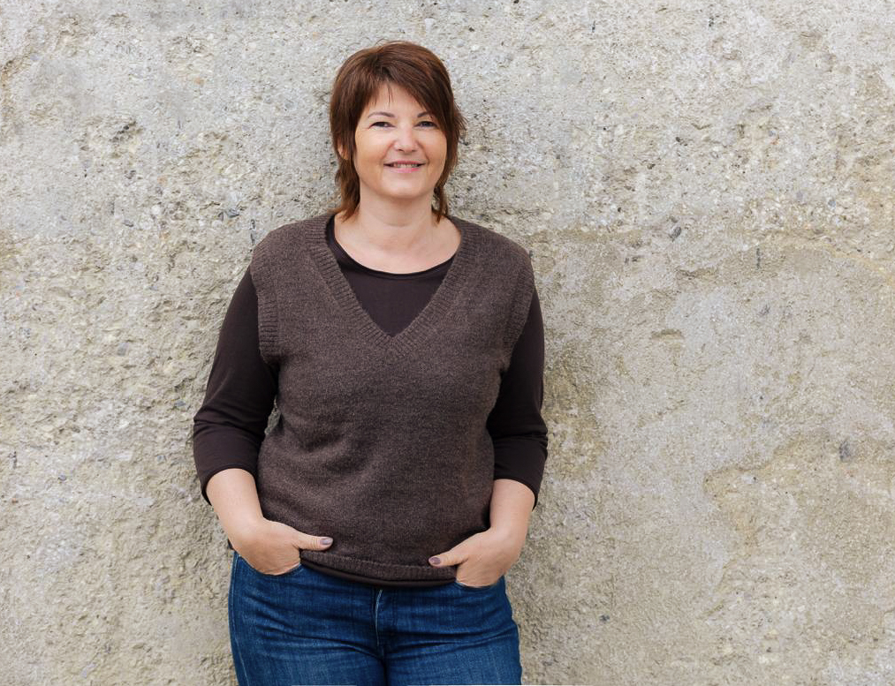

Wir sind Sebastian Pillinger und Klaus Mitterhauser, zwei professionelle Fotografen spezialisiert auf Hotelfotografie, Tourismus und Kulinarik. Mit viel Herzblut und Engagement portraitieren wir Ihren Gastrobetrieb, verleihen Ihrem Auftritt die persönliche Note und erzeugen bei Ihren Gästen den perfekten ersten Eindruck! Ihre Wünsche und Bedürfnisse sind unsere Herausforderungen, die wir mit viel Erfahrung und Engagement gemeinsam meistern werden!
Wir sind österreichweit für Sie unterwegs, mit Hauptstandorten in Graz und Kirchdorf an der Krems.

Meisterfotograf
Mein Betrieb besteht bereits seit 2001. Als ehemaliger Absolvent einer Höheren Tourismusschule bringe ich viel Verständnis für die Gastronomie bei unseren Shootings mit. Unkomplizierte Abläufe, maximale Ergebnisse ohne den laufenden Betrieb aufzuhalten sowie Liebe zum Detail zeichnen unsere Arbeiten aus. Gerne beraten wir Sie auch bei der Planung Ihres individuellen Fotoshootings!

MSc.
Bereits vor meinem Masterstudium an der FH JOHANNEUM in Graz beschäftigte ich mich mit digitaler Bildbearbeitung, Mediendesign und Videoschnitt. Künstliche Intelligenz hat lange in der Fotografie Einzug gehalten und ich setze diese digitalen Instrumente als neue Hilfsmittel vorsichtig bei der Datenaufbereitung ein! Als Eventfotograf bei Kultur- und Sportveranstaltungen bin ich in ganz Österreich im Einsatz!

Organisation & Backoffice
Ich kümmere mich bei gastropix um Kundenanfragen, Terminplanung und die organisatorischen Aufgaben rund um unsere Fotoshootings. Damit sich Klaus und Sebastian ganz auf ihre kreative Arbeit konzentrieren können, halte ich ihnen im Hintergrund den Rücken frei. Bei Bedarf unterstütze ich die beiden auch direkt bei den Shootings. So sorge ich dafür, dass von der ersten Anfrage bis zum fertigen Fotoshooting alles möglichst unkompliziert und reibungslos abläuft.
Authentische Aufnahmen von Lobby, Zimmern und Außenbereich. Wir kreieren einzigartige Fotos mit Stimmung und Leben - unkompliziert und auch während des laufenden Betriebes.
Luftbild-Perspektiven für Hotel & Umgebung: Drohnenaufnahmen in 4K, um Lage, Außenanlagen und Umgebung eindrucksvoll darzustellen.
Professionelle Detailaufnahmen Ihrer kulinarischen Kreationen. Liebevoll arrangiert und perfekt ausgeleuchtet erwecken diese Aufnahmen gusto auf mehr!
Kurzvideos & Teaserclips für Instagram, Facebook & Co. – wir setzen Ihr Haus und Ihre Küche in Szene, perfekt zugeschnitten auf die Sozialen Netzwerke.
In einem unverbindlichen Vorgespräch besprechen wir Ihre Wünsche, die Räumlichkeiten und legen gemeinsam den passenden Rahmen fest. Der Fototermin wird so geplant, dass auch Ausweichtermine wegen Wetter oder Überbuchung möglich sind.
Je nach Aufwand fotografieren wir ein oder mehrere Tage im laufenden Betrieb: Außenaufnahmen und Flugaufnahmen, Innenarchitektur, Zimmer, Restaurant, Lobby, Speisen und Getränke - je nach Bedarf und auf Wunsch auch mit Mitarbeiter oder externen Models für authentische, kostengünstige Bildmotive. Gerne auch für Sommer und Winter, für eine ganzjährig stimmige Bildsprache.
Alle Bilder werden gesichtet, ausgewählt und professionell bearbeitet. Geliefert wird alles optimiert für Druck oder Homepage. Sie erhalten ALLE AUFNAHMEN mit ALLEN NUTZUNGSRECHTEN, ohne zeitlicher Beschränkung!
In der Regel planen wir 2 Tage inklusive Übernachtung vor Ort ein, damit wir alle Bereiche – Außen, Zimmer, Gastronomie und Gemeinschaftsflächen – in Ruhe und bei gutem Licht abdecken können.
Ja, genau darauf sind wir spezialisiert. Wir stimmen den Ablauf vorab mit Ihnen ab (z. B. Frühstückszeiten, Zimmerreinigung), damit wir Ihren Betrieb möglichst wenig stören.
Der Termin wird wetterabhängig geplant. Bei Bedarf verschieben wir kurzfristig auf einen Ausweichtermin, damit Außen- und Flugaufnahmen bei optimalen Bedingungen entstehen.
Nicht zwingend – gerne fotografieren wir mit Ihren Mitarbeiter:innen oder deren Familien. Das wirkt oft authentischer und ist kostengünstiger als professionelle Models.
Nach dem Shooting sichten wir alle Aufnahmen, wählen die besten aus und bearbeiten sie professionell. Sie erhalten die Bilder fertig für Druck und Website.
Das hängt von der Größe Ihres Hauses und dem gewünschten Umfang ab. Nach einer kurzen Vorstellung Ihres Hauses erstellen wir Ihnen ein individuelles, passendes Angebot.
Wir sind österreichweit für Sie unterwegs, mit Hauptstandorten in Graz und Kirchdorf an der Krems.
Erzählen Sie uns kurz von Ihrem Haus – wir melden uns zeitnah mit einem passenden Vorschlag.
Für Professionelle Aufnahmen Ihres Hotels während dem Normalbetrieb: